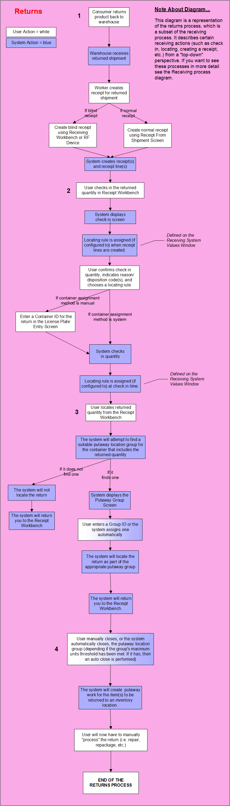

Returns Process Summary
Functionality
** Process Flows **
This process diagram illustrates how the system handles product that
is returned to your warehouse.

Step 1: Product returned to warehouse; receipt created for returned
shipment.
The returns process starts when a consumer returns product that they
have purchased to your warehouse. SCALE can process returns from the moment
they arrive at the receiving dock to the point at which the returned item
is ready to be putaway into an inventory location.
The first step in processing a return is to create a receipt from the
shipment that includes the returned item(s). This can be done using one
of two methods: creating a receipt from the shipment itself or creating
a blind receipt.
- Receipt from
a Shipment: The dock worker would use the Shipment Insight screen to
create a receipt directly from the returned shipment. They will enter
the receipt's pertinent data in the Receipt From Shipment Window.
- Blind Receipt:
The dock worker would use the Receipt Workbench (or an RF device) to
create a new "blind" receipt. This type of receipt allows a
user to create a receipt "on the fly" without having to enter
a receipt into the system. Blind receipts help workers process
returns in a timely manner.
Regardless of the receipt creation method, the system will create the
receipt/receipt line(s) according to information on the shipment, and/or
other data that you provide.
Step 2: User checks in returned product.
For the next step, the dock worker will have to check in the returned
item quantity that is now included on a receipt. They will perform this
action on the Receipt Workbench. When the system begins executing the
check in action, the user will have to provide the following information:
- Confirm the quantity
of the returned items that you want to check in.
- Enter the condition
codes of the returned items: a reason code and/or a disposition
code. These values are not mandatory; however, if your warehouse supports
them, they can help give further information about the condition of the
returned items. Also, they can help the system find a suitable location,
as the locating rule can be affected by these values.
- Choose a locating
rule for the returned item quantity. This rule typically would
define a location that returns are taken for manual processing (see step
4 of this text). Note that the rule used can be determined automatically
by the reason/disposition code, as each code has a locating rule associated
with it.
- Assign a license plate ID, if the user's receiving preference dictates that they are required
to manually assign a license plate ID. If not, the system will automatically
assign this value.
- If active, the user will have to verify the putaway group ID.
Step 3: User locates returned product.
After check in, the worker will now need to locate the returned quantity
using the Receipt Workbench. During the locating process, the system
will attempt to find a suitable putaway location group for the return.
A putaway location group allows a series of received items to be putaway
as one group. These groups are defined on the Putaway Location Group Window.
- If the system
finds a group, it will display the Putaway Group Window, where
the user can confirm which containers were assigned to which putaway groups.
- If the system
does not find a group, it will not locate the return.
- Note that the user may have to verify the putaway group ID if defined to do so in the putaway group configuration.
Step 4: Putaway location group is closed; user manually processes returned
item(s).
- A worker will need to close the putaway group
in the Putaway Workbench Window. This will indicate that work has finished
on this return, and the item(s) are ready to be putaway in an inventory
location. The system can automatically close a putaway group, if the group's
maximum units threshold has been met. If it has, then an auto close is
performed. Note that one can also reopen or remove containers from a putaway group
using this window.
- After a group is closed, the system will create
the putaway work for the item(s) to be returned to an inventory location.
- The final step then in the SCALE returns process
begins after the returned quantity has been checked in and located, and
the putaway location group has been closed. A worker then will take the
returned quantity from the receiving dock (typically in a tote/bin with
other related return items) to a special area for manual processing. These
manual activities include such actions as (but not limited to):
- Taking the returned item out of its shipping container
- Fixing/assessing damaged items
- Repackaging/shrink wrapping the item
After the manual processing is complete, the item quantity will now
reside in the returns area with other items from its putaway group. The
items then will await a worker, who will execute the putaway work instruction
and place the item in its intended inventory location.